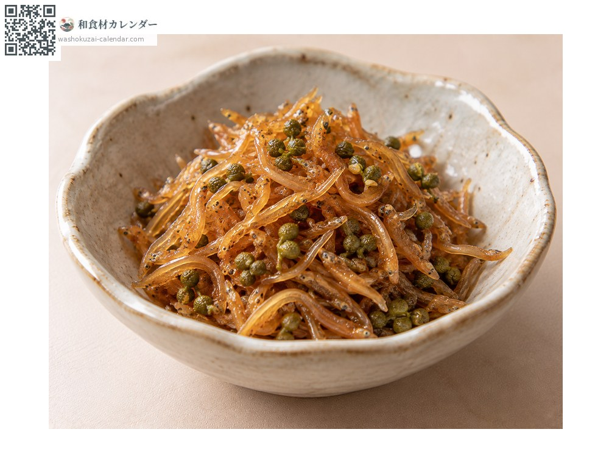
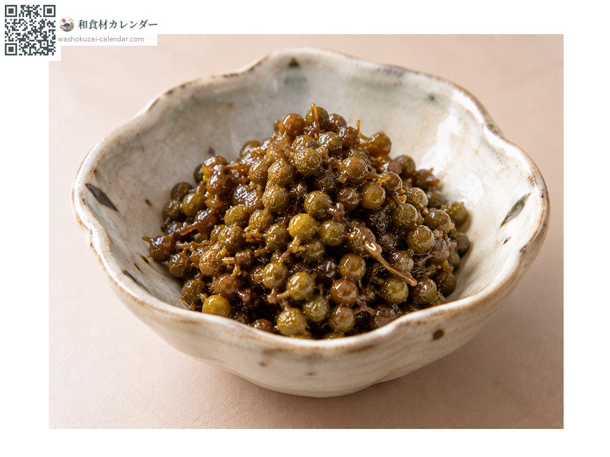
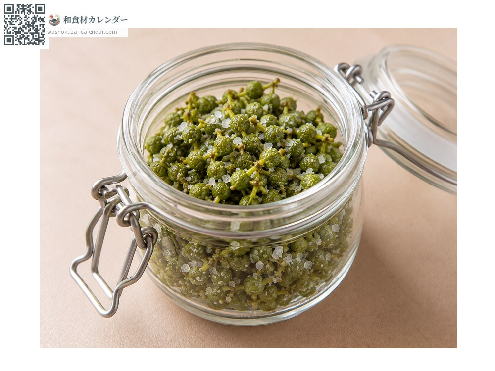
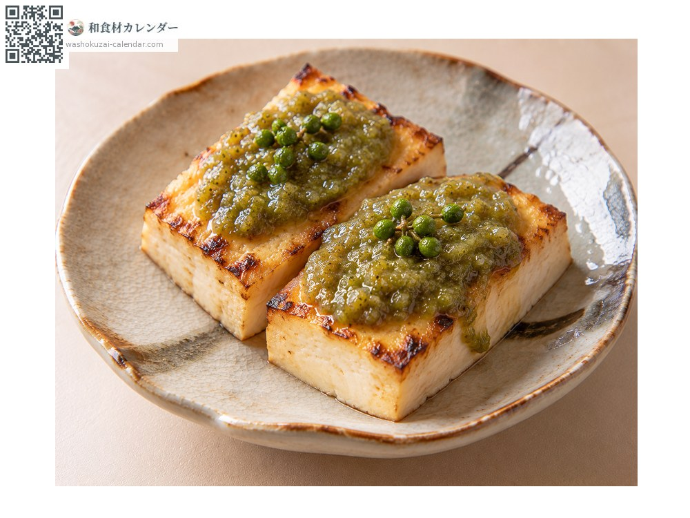

Sansho peppercorn
実山椒 みざんしょう mizansho
Also known asmizansho, mizanshou, sansho, sanshou
At its best in Jun, Jul

When it is at its best
In seasonAvailable
How to cook

Chirimen sansho
Simmered sweet and savoury with tiny dried sardines. A Kyoto staple.

Tsukudani
Parboiled and simmered in soy sauce, which keeps for a long time.

Salt-cured
Boiled and cured in salt, so it can be used all year.

Sansho miso
Ground into miso and spread on dengaku.
How to choose
Deep green berries of even size, on fine stems, firm to the touch.
Storage
It does not keep as it is. Parboil and freeze, or cure in salt or soy sauce.
Main areas
Good to know
The same tree gives both kinome and these berries, but this is the fruit. Green berries appear for only a short spell around June. The tingling on the tongue comes from sanshool, closer to a stimulus than to heat. Wakayama grows most of the national crop.